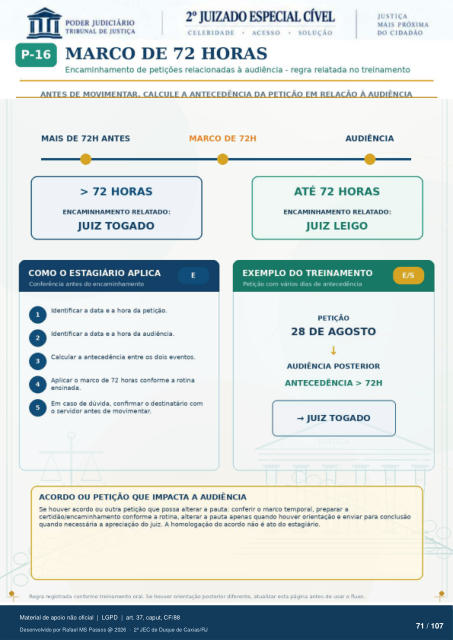

Transcrição automática em português, ainda não revisada. Confira grafia, prazos e termos jurídicos na imagem e no PDF antes de utilizar.
MARCO DE 72 HORAS
Encaminhamento de petições relacionadas à audiência - regra relatada no treinamento
ANTES DE MOVIMENTAR. CALCULE ANTECEDENC'A PETICÁO EM RELACÂO À AUDIÊNCIA
MAIS DE 72H ANTES
> 72 HORAS
ENCAMINHAMENTO RELATADO:
JUIZ TOGADO
COMO O ESTAGIÁRIO APLICA
Conferência antes do encaminhamento Identificar a data e a hora da petição.
Identificar a data e a hora da audiência.
MARCO DE 72H
AUDIÊNCIA
ATÉ 72 HORAS
ENCAMINHAMENTO RELATADO:
JUIZ LEIGO
Calcular a antecedência entre os dois eventos. Aplicar o marco de 72 horas conforme a rotina
ensinada. Em caso de dúvida, confirmar o destinatário com
o servidor antes de movimentar.
EXEMPLO DO TREINAMENTO
Petição com vários dias de antecedência
PETIÇÃO
28 DE AGOSTO
AUDIÊNCIA POSTERIOR
ANTECEDÊNCIA > 72H
JUIZ TOGADO
ACORDO OU PETIÇÃO QUE IMPACTA A AUDIÊNCIA
Se houver acordo ou outra petição que possa alterar a pauta: conferir o marco temporal, preparar a certidão/encaminhamento conforme a rotina, alterar a pauta apenas quando houver orientação e enviar para conclusão
quando necessária a apreciação do juiz. A homologação do acordo nao é ato do estagiário. Regra registrada conforme treinamento oral. So houver orientação posterior diferente, atualizar esta página antes de usar o fluxo.
Ver também o infográfico original (página 71)
